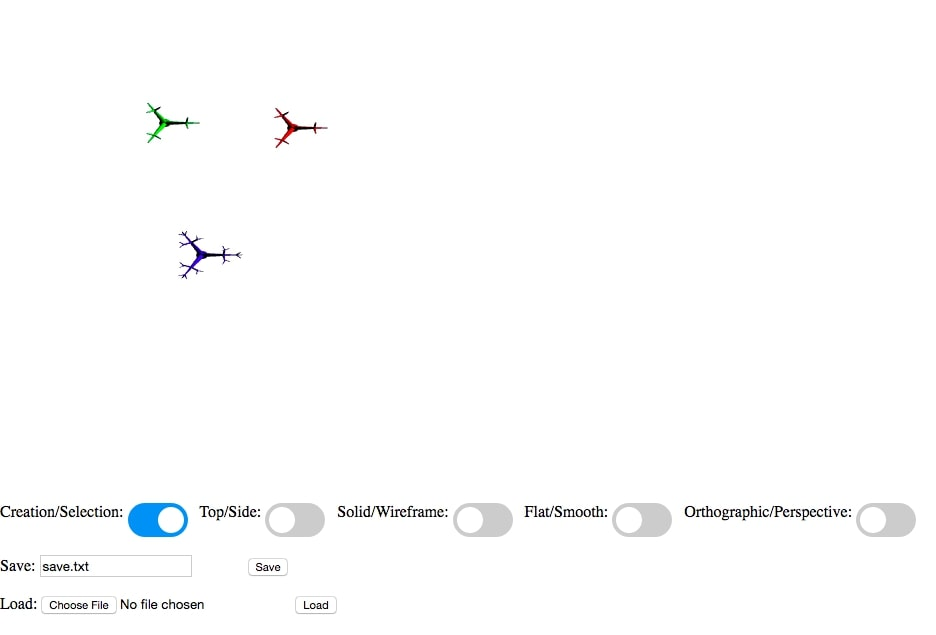
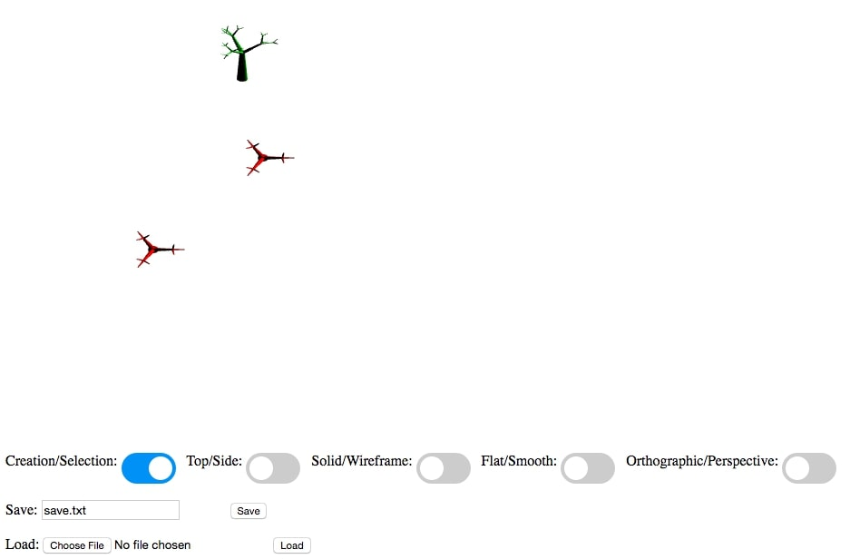

Celine Seghbossian
Login: cseghbos@ucsc.edu
CSE 160 -- Lab #3
Sunday, November 3, 2019
List of Files:
/lab3/
lab3.js
driver.html
features.html (this file)
output1.jpg
output2.jpg
This program doesn't fully implement any of the functionality as specified in the Lab3 Requirements.
-
Smooth/Flat Shading
This feature was attempted but not completed.
-
Select a Tree
This feature was partially implemented but not completed due to roadblocks. I was able to detect a click and read the pixels of the click.
I was also able to give each tree a unique ID in order to select one at a time. However, I could not determine which tree to select based off
of the readPixel values.
I created a toggle to go from select/create mode. This inhibits the user from drawing a tree when trying to select. Because I wasn't able to
get select working, I outputted "not drawing a tree" to console as replacement behavior.
-
Specular Lighting
The calculations for specular lighting were attempted in the shaders but not working properly. I tried calculating the angle between halfway and normal
and calculating the specular light and adding it to the diffuse lighting. Unfortunately, I was not successful.
For more information on implementation, please reference function descriptions in lab3.js
Link for grader:
driver.html

